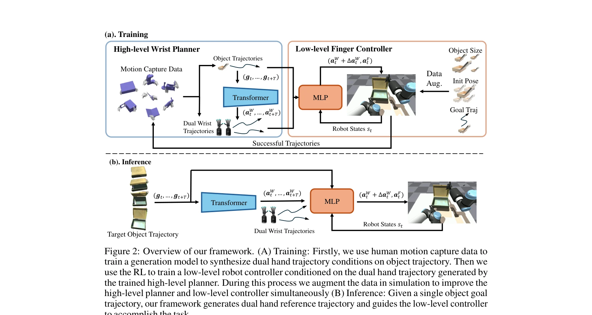
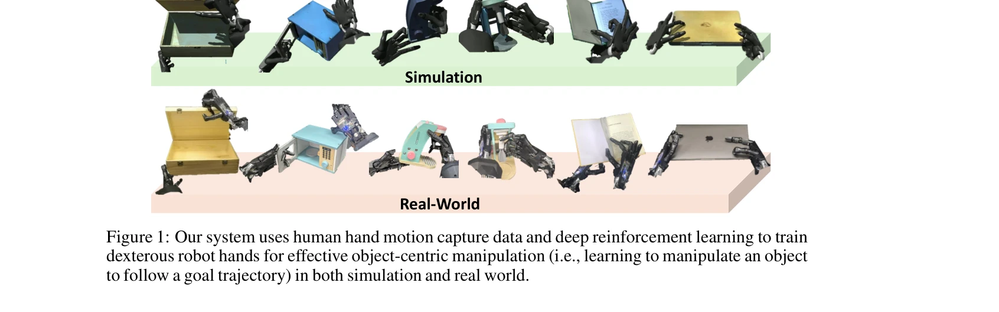

저자: Yuanpei Chen, Chen Wang, Yaodong Yang, C. Karen Liu | 날짜: 2024-11-06 | URL: https://arxiv.org/abs/2411.04005

Figure 2: Overview of our framework. (A) Training: Firstly, we use human motion capture data to
인간의 손 모션 캡처 데이터를 활용하여 로봇 다지털 조작을 학습하는 계층적 정책 학습 프레임워크를 제안한다. 고수준의 손목 궤적 생성 모델과 저수준의 손가락 제어기를 조합하여 embodiment gap을 극복한다.

Figure 1: Our system uses human hand motion capture data and deep reinforcement learning to train
Figure 2: Overview of our framework. (A) Training: Firstly, we use human motion capture data to
총평: 본 논문은 인간 wrist 모션의 embodiment 불변성을 창의적으로 활용하여 embodiment gap 문제를 해결하고, 계층적 학습 프레임워크로 복잡한 다지털 조작을 효과적으로 학습한다. 실세계 전이와 일반화 능력 모두 입증하여 로봇 조작 분야에 significant한 기여를 한다.